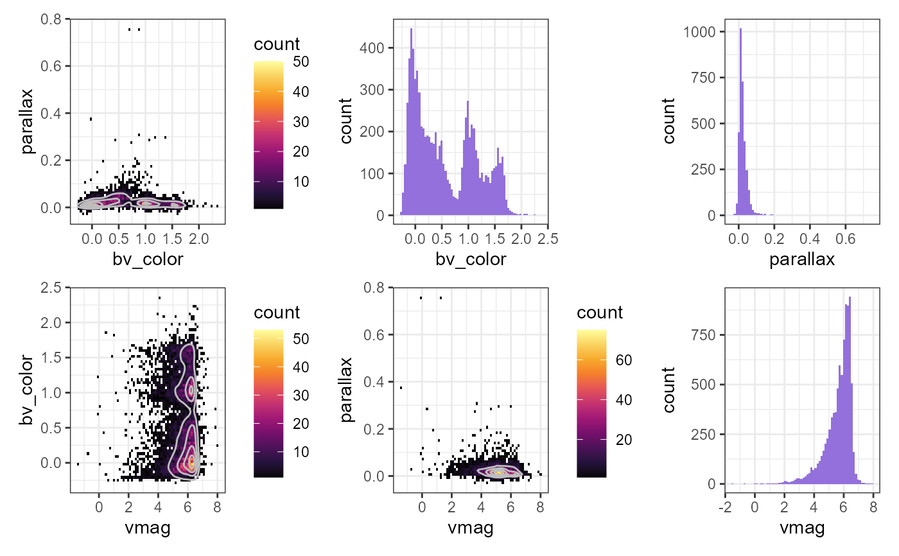
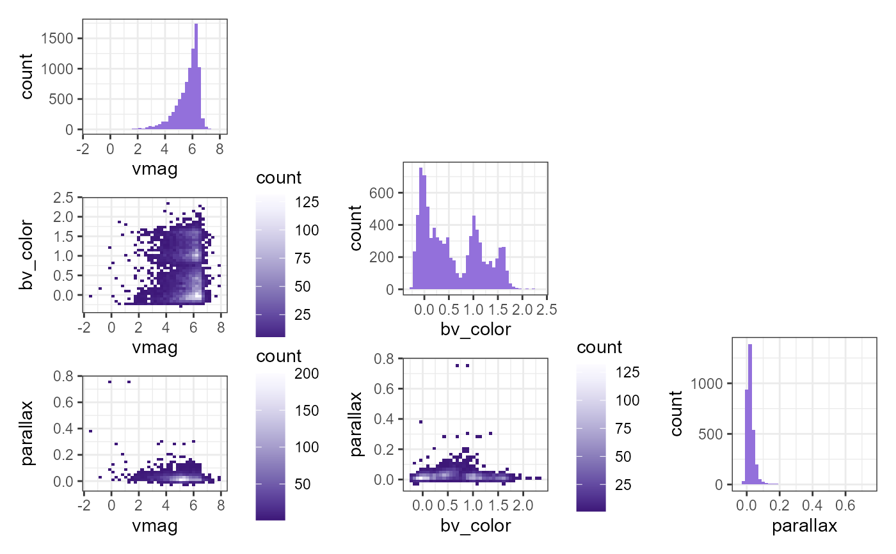
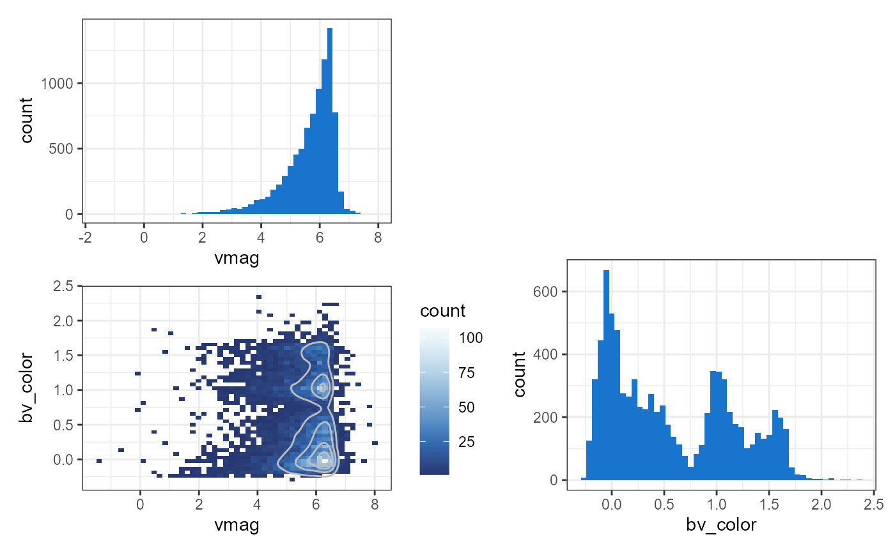

Astronomical Cornerplots
astroCornerplot.RdCreate cornerplots for astronomy data for an unlimited number of paired variables.
Usage
astroCornerplot(
data,
varlist = names(data),
contour = TRUE,
fill = "mediumpurple",
palette = "Inferno",
bins = 70,
contourBins = 5
)Arguments
- data
a data frame.
- varlist
character, list with all numeric variables to create the cornerplot and histograms with. defaults to all variables in the dataset.
- contour
(optional) logical, specify whether to overlay contour plot on 2d histogram, defaults to TRUE.
- fill
(optional) fill color for histograms, defaults to mediumpurple.
- palette
(optional) color palette for 2d histogram scale, defaults to Inferno. options are available through the
scale_fill_continuous_sequentialfunction in the colorspace package.- bins
(optional) number of bins for all histograms, defaults to 70.
- contourBins
(optional) number of bins for contour plot, defaults to 5.
Value
corner plot with 2d histogram showing intersection of both variables and regular histogram for each variable.
Examples
astroCornerplot(starcatalog)
#>
#> Attaching package: 'dplyr'
#> The following objects are masked from 'package:stats':
#>
#> filter, lag
#> The following objects are masked from 'package:base':
#>
#> intersect, setdiff, setequal, union

astroCornerplot(starcatalog, contour=FALSE, fill="mediumpurple", palette = "Purples", bins=40)

astroCornerplot(starcatalog, varlist = c("vmag", "bv_color"), palette = "Blues", fill="dodgerblue3", bins = 50, contourBins = 3)
